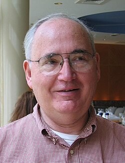

This article includes a list of general references but lacks sufficient corresponding inline citations. (February 2018) |
Dana Stewart Scott | |
|---|---|
 | |
| Born | October 11, 1932 |
| Education | University of California, Berkeley (BA) Princeton University (MA, PhD) |
| Known for |
|
| Awards |
|
| Scientific career | |
| Fields |
|
| Institutions | |
| Thesis | Convergent Sequences of Complete Theories (1958) |
| Alonzo Church | |
Doctoral students | |
{kind=link}
Dana Stewart Scott (born October 11, 1932) is an American logician who is the Hillman University Professor emeritus of Computer Science, Philosophy, and Mathematical Logic at Carnegie Mellon University.[1] He is now retired and lives in Berkeley, California. He and Michael O. Rabin won the 1976 ACM Turing Award for their work on automata theory, while his collaborative work with Christopher Strachey in the 1970s laid the foundations of modern approaches to the semantics of programming languages. He has also worked on modal logic, topology, and category theory.
Early career
Scott received his B.A. in Mathematics from the University of California, Berkeley, in 1954. He wrote his Ph.D. thesis on Convergent Sequences of Complete Theories under the supervision of Alonzo Church while at Princeton, and defended his thesis in 1958. Solomon Feferman (2005) writes of this period:
Scott began his studies in logic at Berkeley in the early 50s while still an undergraduate. His unusual abilities were soon recognized and he quickly moved on to graduate classes and seminars with Tarski and became part of the group that surrounded him, including me and Richard Montague; so it was at that time that we became friends. Scott was clearly in line to do a Ph. D. with Tarski, but they had a falling out for reasons explained in our biography.[2] Upset by that, Scott left for Princeton where he finished with a Ph. D. under Alonzo Church. But it was not long before the relationship between them was mended to the point that Tarski could say to him, "I hope I can call you my student."
After completing his Ph.D. studies, he moved to the University of Chicago, working as an instructor there until 1960. In 1959, he published a joint paper with Michael O. Rabin, a colleague from Princeton, titled Finite Automata and Their Decision Problem (Scott and Rabin 1959) which introduced the idea of nondeterministic machines to automata theory. This work led to the joint bestowal of the Turing Award on the two, for the introduction of this fundamental concept of computational complexity theory.
University of California, Berkeley, 1960–1963
Scott took up a post as assistant professor of mathematics, back at the University of California, Berkeley, and involved himself with classical issues in mathematical logic, especially set theory and Tarskian model theory. He proved that the axiom of constructibility is incompatible with the existence of a measurable cardinal, a result considered seminal in the evolution of set theory.[3]
During this period he started supervising Ph.D. students, such as James Halpern (Contributions to the Study of the Independence of the Axiom of Choice) and Edgar Lopez-Escobar (Infinitely Long Formulas with Countable Quantifier Degrees).
Modal and tense logic
Scott also began working on modal logic in this period, beginning a collaboration with John Lemmon, who moved to Claremont, California, in 1963. Scott was especially interested in Arthur Prior's approach to tense logic and the connection to the treatment of time in natural-language semantics, and began collaborating with Richard Montague (Copeland 2004), whom he had known from his days as an undergraduate at Berkeley. Later, Scott and Montague independently discovered an important generalisation of Kripke semantics for modal and tense logic, called Scott-Montague semantics (Scott 1970).
John Lemmon and Scott began work on a modal-logic textbook that was interrupted by Lemmon's death in 1966. Scott circulated the incomplete monograph amongst colleagues, introducing a number of important techniques in the semantics of model theory, most importantly presenting a refinement of the canonical model that became standard, and introducing the technique of constructing models through filtrations, both of which are core concepts in modern Kripke semantics (Blackburn, de Rijke, and Venema, 2001). Scott eventually published the work as An Introduction to Modal Logic (Lemmon & Scott, 1977).
Stanford, Amsterdam and Princeton, 1963–1972
Following an initial observation of Robert Solovay, Scott formulated the concept of Boolean-valued model, as Solovay and Petr Vopěnka did likewise at around the same time. In 1967, Scott published a paper, A Proof of the Independence of the Continuum Hypothesis, in which he used Boolean-valued models to provide an alternate analysis of the independence of the continuum hypothesis to that provided by Paul Cohen. This work led to the award of the Leroy P. Steele Prize in 1972.
University of Oxford, 1972–1981
Scott took up a post as Professor of Mathematical Logic on the Philosophy faculty of the University of Oxford in 1972. He was member of Merton College while at Oxford and is now an Honorary Fellow of the college.
Semantics of programming languages
This period saw Scott working with Christopher Strachey, and the two managed, despite administrative pressures, to do work on providing a mathematical foundation for the semantics of programming languages, the work for which Scott is best known. Together, their work constitutes the Scott–Strachey approach to denotational semantics, an important and seminal contribution to theoretical computer science. One of Scott's contributions is his formulation of domain theory, allowing programs involving recursive functions and looping-control constructs to be given denotational semantics. Additionally, he provided a foundation for the understanding of infinitary and continuous information through domain theory and his theory of information systems.
Scott's work of this period led to the bestowal of:
- The 1990 Harold Pender Award for his application of concepts from logic and algebra to the development of mathematical semantics of programming languages;
- The 1997 Rolf Schock Prize in logic and philosophy from the Royal Swedish Academy of Sciences for his conceptually oriented logical works, especially the creation of domain theory, which has made it possible to extend Tarski's semantic paradigm to programming languages as well as to construct models of Curry's combinatory logic and Church's calculus of lambda conversion; and
- The 2001 Bolzano Prize for Merit in the Mathematical Sciences by the Czech Academy of Sciences
- The 2007 EATCS Award for his contribution to theoretical computer science.
Carnegie Mellon University, 1981–2003
At Carnegie Mellon University, Scott proposed the theory of equilogical spaces as a successor theory to domain theory; among its many advantages, the category of equilogical spaces is a cartesian closed category, whereas the category of domains[4] is not. In 1994, he was inducted as a Fellow of the Association for Computing Machinery. In 2012 he became a fellow of the American Mathematical Society.[5]
Bibliography
- With Michael O. Rabin, 1959. Finite Automata and Their Decision Problem. doi:10.1147/rd.32.0114
- 1967. A proof of the independence of the continuum hypothesis. Mathematical Systems Theory 1:89–111.
- 1970. 'Advice on modal logic'. In Philosophical Problems in Logic, ed. K. Lambert, pages 143–173.
- With John Lemmon, 1977. An Introduction to Modal Logic. Oxford: Blackwell.
- Gierz, G.; Hofmann, K. H.; Keimel, K.; Lawson, J. D.; Mislove, M. W.; Scott, D. S. (2003). Continuous Lattices and Domains. Encyclopedia of Mathematics and its Applications. Vol. 93. Cambridge University Press. ISBN 978-0-521-80338-0.
See also
References
- ^ "Dana S. Scott". Retrieved October 13, 2024.
- ^ Feferman & Feferman 2004.
- ^ Kanamori, The Higher infinite, p. 44, 49.
- ^ Where here Dana Scott counts the category of domains to be the category whose objects are pointed directed-complete partial orders (DCPOs), and whose morphisms are the strict, Scott-continuous functions
- ^ List of Fellows of the American Mathematical Society, retrieved July 14, 2013.
Further reading
- Blackburn, de Rijke and Venema (2001). Modal logic. Cambridge University Press.
- Jack Copeland (2004). Arthur Prior. In the Stanford Encyclopedia of Philosophy.
- Anita Burdman Feferman and Solomon Feferman (2004). Alfred Tarski: life and logic. Cambridge University Press, ISBN 978-0-521-80240-6, ISBN 978-0-521-80240-6.
- Solomon Feferman (2005). Tarski's influence on computer science. Proc. LICS'05. IEEE Press.
- Joseph E. Stoy (1977). Denotational Semantics: The Scott-Strachey Approach to Programming Language Theory. MIT Press. ISBN 978-0-262-19147-0
External links
- Official website
- DOMAIN 2002 Workshop on Domain Theory — held in honor of Scott's 70th birthday.
- Dana Scott at the Mathematics Genealogy Project
- Dana Scott interviewed by Gordon Plotkin, as part of the Association for Computing Machinery series of interviews of Turing award winners: Part 1 (Nov 12, 2020) Part 2 (Dec 29, 2020) Part 3 (Jan 12, 2021) Part 4 (Feb 18, 2021)
- Selected papers of Dana S. Scott